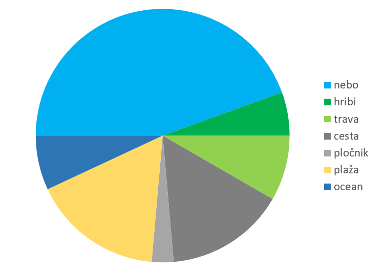

Licenca
To delo je na voljo pod pogoji slovenske licence Creative Commons 2.5:
priznanje avtorstva - nekomercialno - deljenje pod enakimi pogoji.
Celotna licenca je na voljo na spletu na naslovu http://creativecommons.org/licenses/by-nc-sa/2.5/si/. V skladu s to licenco je dovoljeno vsakemu uporabniku delo razmnoževati, distribuirati, javno priobčevati, dajati v najem in tudi predelovati, vendar samo v nekomercialne namene in ob pogoju, da navede avtorja oziroma avtorje in izdajatelja tega dela. Če uporabnik delo predela, kar pomeni, da ga spremeni, preoblikuje, prevede ali uporabi to delo v svojem delu, lahko predelavo dela ponudi na voljo le pod pogoji, ki so enaki pogojem iz te licence oziroma pod enako licenco.

Uvod v vizualizacijo podatkov
Elektronske preglednice so uporabne tudi za hitro ustvarjanje različnih vrst grafičnih prikazov podatkov, kar imenujemo vizualizacija podatkov (ang. data visualization). S pomočjo grafikonov lahko podatke enostavneje prikažemo, analiziramo in razumemo. Podobno kot spodnja slika, podobna grafikonu, lahko tudi podatki, predstavljeni z ustreznim grafikonom povedo neko zgodbo, če jo znamo oziroma uspemo razbrati.

Namesto izraza grafikon lahko uporabljamo tudi druge izraze, na primer grafični prikaz, diagram ali graf, ki vsi pomenijo bolj ali manj isto.
Vizualizacija podatkov nam omogoča:
- raziskovanje podatkov, ki jih imamo in
- prikaz razumevanja medsebojnih razmerij med podatki.
Obstaja veliko različnih vrst grafikonov. Omenili bomo le nekaj najpogostejših, ki si jih bomo ogledali tudi v nadaljevanju:
Krožni oziroma tortni grafikon (ang. pie chart) je krožni statistični grafikon, s katerim prikažemo odnose med deli in celoto. Tako kot tortni tudi kolobarni grafikon (ang. donut chart) prikazuje odnose med deli in celoto, vendar pa lahko vsebuje več kot en niz podatkov.
Stolpčni grafikon (ang. column chart) običajno prikaže zvrsti vzdolž vodoravne osi in vrednosti vzdolž navpične osi. Palični grafikon (ang. bar chart) običajno prikaže primerjave med posameznimi elementi, pri čemer so zvrsti običajno razporejene preko vodoravne osi, vrednosti pa preko navpične.
Histogram je podobne stolpčnemu grafikonu vendar se od njega razlikuje v tem, da histogram uporabljamo za prikaz pogostosti pojavljanja elementov, razvrščenih v intervale, medtem ko stolpčni grafikon uporabljamo za prikaz primerjave med elementi.
Lomljenko oziroma črtni grafikon (ang. line chart) običajno uporabljamo za prikaz trendov v podatkih na enakih (neprekinjenih) intervalih, kot so meseci, četrtletja ali finančna leta. Ploščinski grafikon (ang. area chart) uporabljamo za prikaz sprememb v časovnem obdobju in skupno vrednost v celotnem trendu. S prikazom vsote izrisanih vrednosti, ploščinski grafikon prikaže tudi razmerje med deli in celoto.
Kombinirani grafikon (ang. combination chart, combo chart) združuje dve različni vrsti grafikonov v enem prikazu. Običajno sta to stolpčni grafikon in črtni grafikon.
Raztreseni grafikon (ang. scatter plot) združi x in y v enotne podatkovne točke in jih prikaže v neenakomernih razmakih ali gručah. Običajno ga uporabljamo za prikaz in primerjavo številskih vrednosti, na primer znanstvenih, statističnih in inženirskih podatkov.
Podatke iz stolpcev ali vrstic je mogoče prikazati v polarnem grafikonu (ang. polar chart, radar chart). Polarni grafikon primerja združene vrednosti več nizov podatkov.
Škatla z brki (ang. box-and-whisker plot) je grafikon, s katerim zelo nazorno prikažemo razpršenost podatkov. Za prikaz škatle z brki poleg kvartilov potrebujemo še najmanjšo in največjo vrednost med podatki.
Toplotni prikaz (ang. heat map) predstavlja podatke, kjer so posamezne vrednosti v tabeli predstavljene z različnimi barvami.